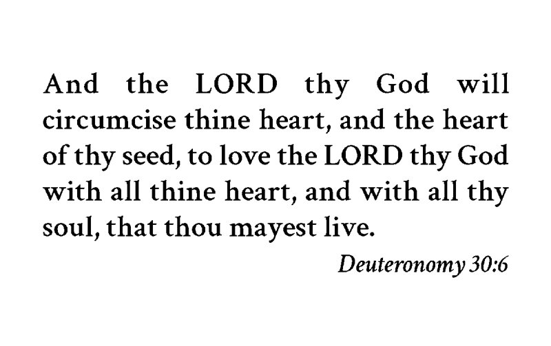

Card 1

Front
And thou shalt love the LORD thy God with all thine heart, and with all thy soul, and with all thy might.
Deuteronomy 6:5Back
And the LORD thy God will circumcise thine heart, and the heart of thy seed, to love the LORD thy God with all thine heart, and with all thy soul, that thou mayest live.
Deuteronomy 30:6